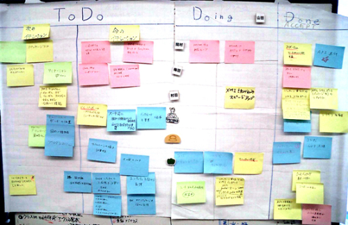
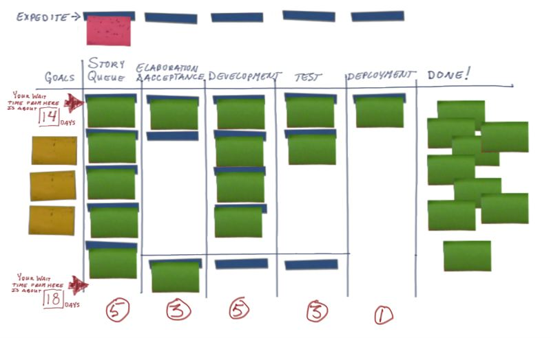
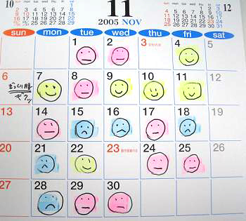

Dikkat : Yapım aşamasındadır.
XP Proje Planlama ve Örnek Olaylar
İçindekiler
- XP Proje Planlaması
- Kanban, Burndown vb Kavramlar
- İşe Yaran Bazı Servis ve Programlar
- Atölye Çalışması ve Örnek Olay İncelemesi
XP Proje Planlaması
Kullanıcı Hikayeleri
- Kullanıcı hikayeleri alınır.
- Kullanıcı hikayeleri önceliğe koyulur.
- Her kullanıcı hikayesi için görevler oluşturulur.
- Her kullanıcı hikayesi için testler oluşturulur.
İterasyon ve Sürüm Planı
- Poker Oyunu
- Load factor
- Programcının denemesi (Spike Solution)
- İterasyon ve sürüm planlamasının yapılması
Kanban, Burndown vb Kavramlar
- Use Case
- Domain model
- Arayüz protipleri
- Navigasyon listesi
- Kabul Onay Testleri
- Stand up toplantıları
- Geriye dönük toplantılar
- Burn down
- Kanban
- Niko-niko
Burndown

Kanban
 HENRIK KNIBERG'ın bloğunda paylaştığı Bir günlük kanban hikayesi.. içeğini mutlaka göz gezdiriniz.
Niko Niko
İşe Yarayan Bazı Servis ve Programlar
- XP -> https://www.pivotaltracker.com
- AGİLE -> http://basecamphq.com
- INTERFACE -> http://pencil.evolus.vn/
- GIT -> https://github.com/
- SVN -> http://code.google.com/
- EDITOR -> Kate, gEdit, Intype, textmate
- IDE -> Eclipse, Netbeans
Atölye Çalışması ve Örnek Olay İncelemesi
Kaynakça
- http://www.infoq.com/resource/articles/agile-kanban-boards/en/resources/Fig4_DailyBurndown.jpg
- http://blog.crisp.se/henrikkniberg/2009/06/26/1246053060000.html
- http://www.infoq.com/resource/articles/agile-kanban-boards/en/resources/Fig1_task-board.jpg
- http://www.infoq.com/resource/articles/agile-kanban-boards/en/resources/Fig5_hitori-niko.jpg